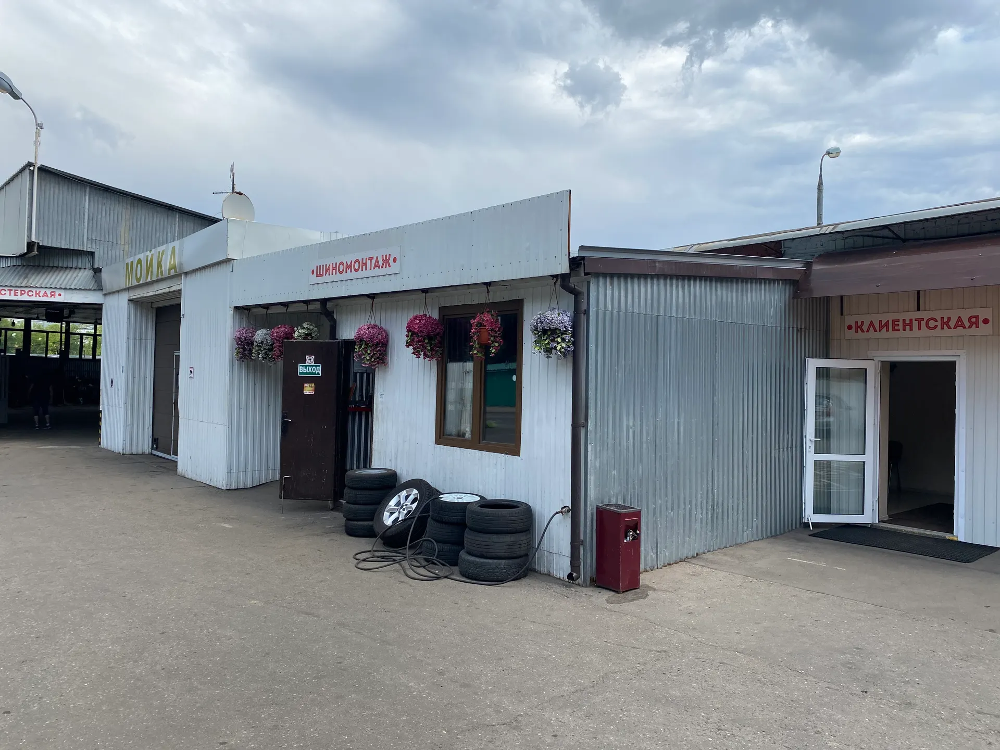
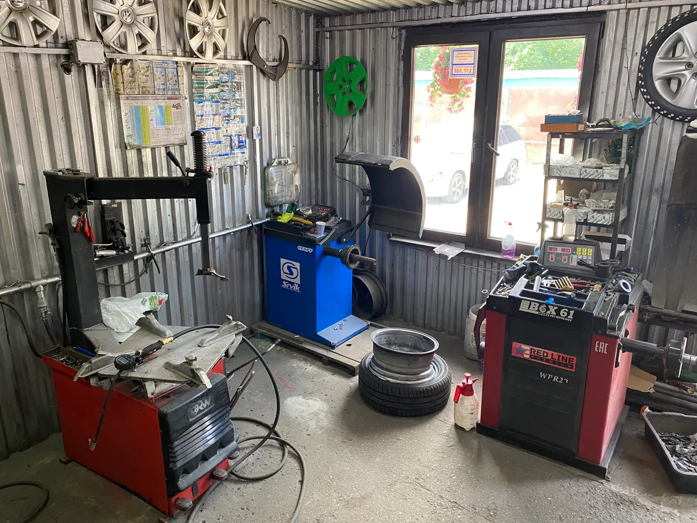
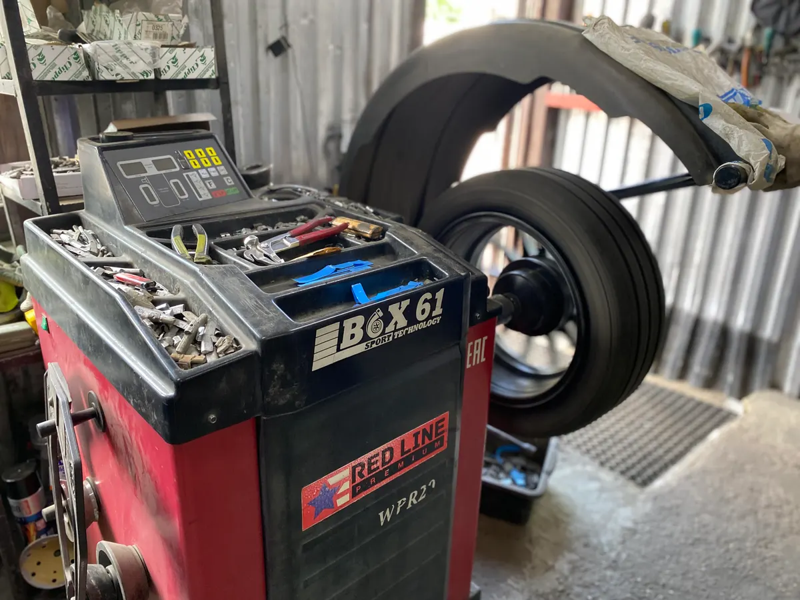
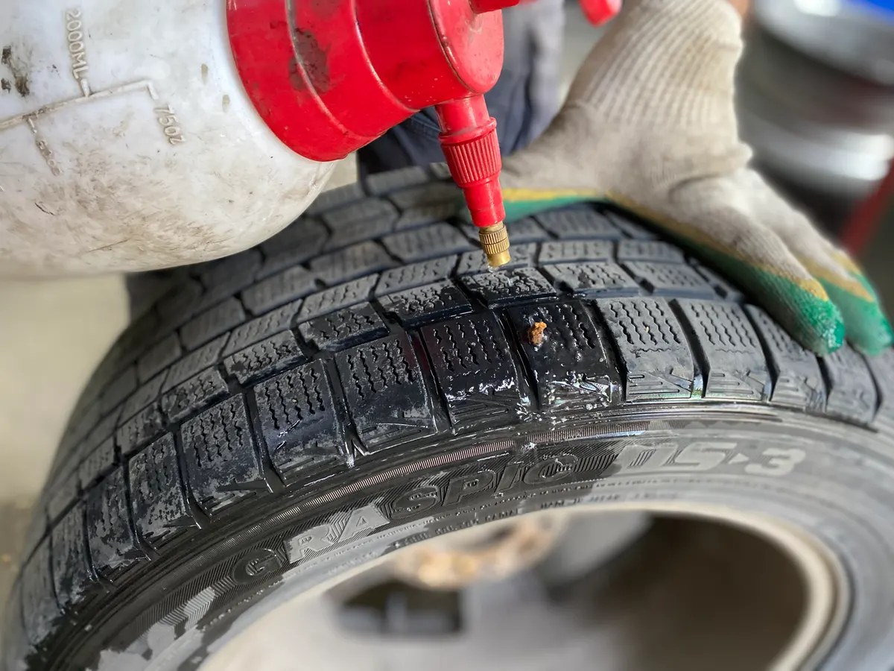

Шиномонтаж · Сормовская, 23, стр. 3
Шиномонтаж № 7 на Сормовской – переобуем быстро и по прайсу
Сормовская улица, 23, стр. 3. Переобувка, балансировка, ремонт проколов и порезов, правка дисков, хранение шин. Ежедневно с 09:00 до 21:00.
- Ежедневно 09:00–21:00
- 276 оценок, рейтинг 4,9
- Легковые, грузовые, мотоциклы

Цены
Цены с карточки на Яндекс Картах. Цену на ваш радиус и машину назовём при записи.
Шиномонтаж, комплект 4 колеса
- R14 и меньше2 000 ₽
- R152 400 ₽
- R162 800 ₽
- R173 200 ₽
- R183 500 ₽
- R194 000 ₽
Ремонт и диски
- Установка жгута300 ₽
- Латки по протектору600 ₽
- Ремонт боковых порезов1 500 ₽
- Правка диска1 500 ₽
- Снятие и установка секретки500 ₽
На карточке есть и второй прайс с ценами выше (R15 – 3000 ₽, R23 – 9500 ₽), вероятно для кроссоверов и внедорожников. Точную цену назовём по вашей машине.
Как проходит
- 01
Пишете или звоните
Называете машину, радиус колёс и удобное время.
- 02
Заезжаете на Сормовскую, 23
Вывеска «Шиномонтаж» у въезда, место для парковки в ожидании есть.
- 03
Снимаем, меняем, балансируем
В отзывах пишут: в восемь рук колёса меняют минут за двадцать.
- 04
Оплачиваете и едете
Оплата наличными, переводом или онлайн.



За чем к нам едут
Быстро
«в 8 рук реально за 20 мин поменяли колеса» – из отзыва на Картах.
Ниже среднего по цене
Клиенты сравнивают с раскрученными сервисами: здесь заметно дешевле.
Уважительно к клиентам
В отзывах хвалят вежливых мастеров и место для парковки в ожидании.
Отзывы с Яндекс.Карт
«Делали сход развал на 2114 Сотрудник все объяснил , выявил места на которые стоит обратить внимание в плане подвески Цена приемлемая за оказанную услугу»
Владимир Любимов · 1 декабря 2025
«Шиномонтаж нормальный очереди не было сделали всё качественно и за адекватную сумму если будет ремонт в следующий раз сюда поеду от дома недалеко»
Сергей Е. · 31 октября 2025
«Заезжала в этот сервис первый раз ! Надо было сделать сход -развал .Приехала без записи,очереди не было . Встретил приятный мастер ,сделала сход /развал быстро и без каких либо проблем! Цена за ось 2000,очень хорошая цена).Всем довольна,машина едет отлично ,ровно и дорогу держит .»
Оксана Пышкина · 14 августа 2025
Отзывы с карточки на Яндекс.Картах, без правок.
Частые вопросы
Как вас найти?
Сормовская улица, 23, стр. 3. Въезд с Сормовской, вывеска «Шиномонтаж».
Нужна ли запись?
Можно приехать в порядке очереди, но с записью на время ждать не придётся.
Берёте грузовые и мотоциклы?
Да, на карточке указаны грузовой шиномонтаж и мотошиномонтаж.
Есть выездной шиномонтаж и хранение?
Да, оба указаны в услугах карточки. Условия назовём по телефону.
Запишитесь на удобное время
- Адрес
- Сормовская улица, 23, стр. 3, Москва
- Часы
- Ежедневно 09:00–21:00
- Телефон
- +7 (977) 381-97-45